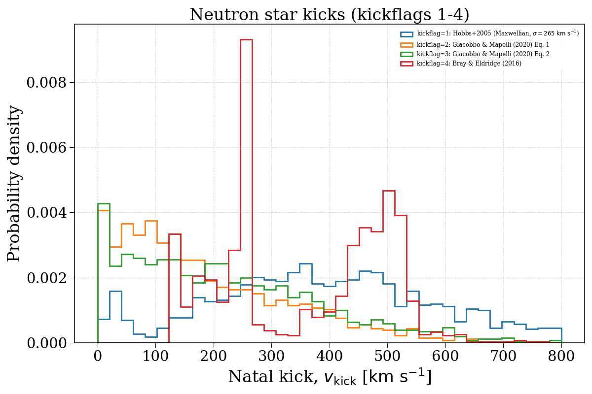
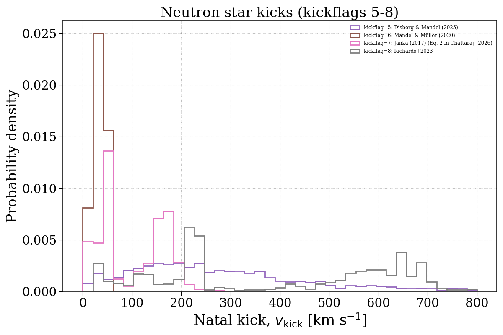
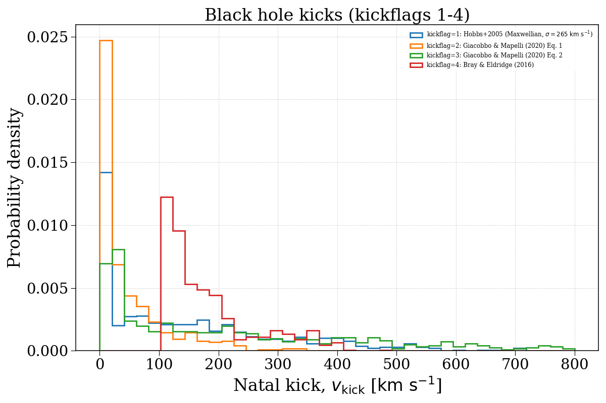
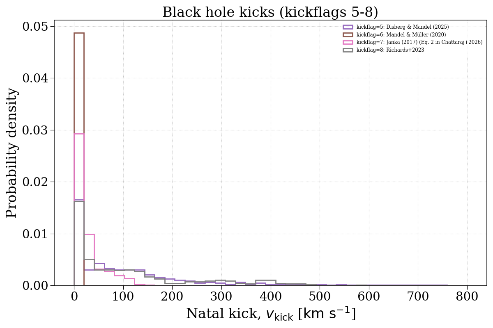

Note
Go to the end to download the full example code.
kickflag¶
This example demonstrates how changing the kickflag parameter can affect the natal kick velocity distributions of compact objects. We separate this into neutron stars and black holes.




Evolving population with kickflag = 1...
Evolving: 0%| | 0/2011 [00:00<?, ?sys/s]
Evolving: 1%| | 12/2011 [00:00<00:25, 78.59sys/s]
Evolving: 2%|▏ | 49/2011 [00:00<00:09, 215.13sys/s]
Evolving: 4%|▎ | 74/2011 [00:00<00:08, 220.02sys/s]
Evolving: 5%|▍ | 100/2011 [00:00<00:08, 232.08sys/s]
Evolving: 6%|▋ | 126/2011 [00:00<00:08, 234.37sys/s]
Evolving: 8%|▊ | 151/2011 [00:00<00:10, 183.39sys/s]
Evolving: 10%|▉ | 193/2011 [00:00<00:07, 242.80sys/s]
Evolving: 11%|█ | 221/2011 [00:01<00:07, 236.19sys/s]
Evolving: 12%|█▏ | 247/2011 [00:01<00:08, 213.74sys/s]
Evolving: 13%|█▎ | 271/2011 [00:01<00:09, 188.20sys/s]
Evolving: 15%|█▌ | 306/2011 [00:01<00:07, 220.00sys/s]
Evolving: 16%|█▋ | 330/2011 [00:01<00:07, 215.40sys/s]
Evolving: 18%|█▊ | 359/2011 [00:01<00:08, 197.48sys/s]
Evolving: 20%|█▉ | 399/2011 [00:01<00:08, 197.29sys/s]
Evolving: 21%|██ | 423/2011 [00:02<00:07, 201.21sys/s]
Evolving: 23%|██▎ | 461/2011 [00:02<00:06, 232.85sys/s]
Evolving: 24%|██▍ | 486/2011 [00:02<00:07, 211.86sys/s]
Evolving: 26%|██▌ | 523/2011 [00:02<00:07, 205.31sys/s]
Evolving: 28%|██▊ | 563/2011 [00:02<00:05, 244.87sys/s]
Evolving: 29%|██▉ | 590/2011 [00:02<00:06, 228.33sys/s]
Evolving: 31%|███ | 615/2011 [00:02<00:06, 210.77sys/s]
Evolving: 33%|███▎ | 656/2011 [00:03<00:05, 251.96sys/s]
Evolving: 34%|███▍ | 683/2011 [00:03<00:05, 252.30sys/s]
Evolving: 35%|███▌ | 710/2011 [00:03<00:05, 240.23sys/s]
Evolving: 37%|███▋ | 735/2011 [00:03<00:05, 233.21sys/s]
Evolving: 38%|███▊ | 759/2011 [00:03<00:05, 215.92sys/s]
Evolving: 39%|███▉ | 791/2011 [00:03<00:05, 238.07sys/s]
Evolving: 41%|████ | 816/2011 [00:03<00:05, 234.50sys/s]
Evolving: 42%|████▏ | 845/2011 [00:03<00:04, 241.59sys/s]
Evolving: 44%|████▎ | 875/2011 [00:03<00:04, 257.09sys/s]
Evolving: 45%|████▍ | 902/2011 [00:04<00:04, 260.23sys/s]
Evolving: 46%|████▌ | 929/2011 [00:04<00:04, 253.87sys/s]
Evolving: 48%|████▊ | 957/2011 [00:04<00:04, 260.99sys/s]
Evolving: 49%|████▉ | 984/2011 [00:04<00:04, 240.80sys/s]
Evolving: 50%|█████ | 1014/2011 [00:04<00:03, 254.15sys/s]
Evolving: 52%|█████▏ | 1040/2011 [00:04<00:04, 211.21sys/s]
Evolving: 53%|█████▎ | 1075/2011 [00:04<00:04, 209.72sys/s]
Evolving: 55%|█████▌ | 1113/2011 [00:04<00:04, 219.20sys/s]
Evolving: 57%|█████▋ | 1154/2011 [00:05<00:03, 259.29sys/s]
Evolving: 59%|█████▉ | 1183/2011 [00:05<00:03, 261.03sys/s]
Evolving: 60%|██████ | 1212/2011 [00:05<00:03, 259.82sys/s]
Evolving: 62%|██████▏ | 1239/2011 [00:05<00:03, 247.10sys/s]
Evolving: 63%|██████▎ | 1266/2011 [00:05<00:02, 252.37sys/s]
Evolving: 64%|██████▍ | 1292/2011 [00:05<00:03, 202.59sys/s]
Evolving: 66%|██████▋ | 1336/2011 [00:05<00:02, 255.29sys/s]
Evolving: 68%|██████▊ | 1364/2011 [00:05<00:02, 242.72sys/s]
Evolving: 69%|██████▉ | 1390/2011 [00:06<00:02, 235.34sys/s]
Evolving: 70%|███████ | 1415/2011 [00:06<00:02, 223.92sys/s]
Evolving: 72%|███████▏ | 1446/2011 [00:06<00:02, 240.65sys/s]
Evolving: 73%|███████▎ | 1471/2011 [00:06<00:02, 223.72sys/s]
Evolving: 75%|███████▍ | 1504/2011 [00:06<00:02, 238.19sys/s]
Evolving: 76%|███████▌ | 1531/2011 [00:06<00:02, 237.40sys/s]
Evolving: 78%|███████▊ | 1562/2011 [00:06<00:01, 255.52sys/s]
Evolving: 79%|███████▉ | 1589/2011 [00:06<00:01, 255.98sys/s]
Evolving: 80%|████████ | 1615/2011 [00:06<00:01, 251.37sys/s]
Evolving: 82%|████████▏ | 1641/2011 [00:07<00:01, 204.94sys/s]
Evolving: 83%|████████▎ | 1663/2011 [00:07<00:01, 208.46sys/s]
Evolving: 84%|████████▍ | 1685/2011 [00:07<00:01, 194.86sys/s]
Evolving: 86%|████████▌ | 1723/2011 [00:07<00:01, 241.20sys/s]
Evolving: 87%|████████▋ | 1749/2011 [00:07<00:01, 229.12sys/s]
Evolving: 88%|████████▊ | 1773/2011 [00:07<00:01, 216.71sys/s]
Evolving: 89%|████████▉ | 1796/2011 [00:07<00:01, 210.95sys/s]
Evolving: 91%|█████████ | 1822/2011 [00:07<00:00, 223.07sys/s]
Evolving: 92%|█████████▏| 1845/2011 [00:08<00:00, 218.47sys/s]
Evolving: 93%|█████████▎| 1872/2011 [00:08<00:00, 216.54sys/s]
Evolving: 95%|█████████▍| 1901/2011 [00:08<00:00, 234.91sys/s]
Evolving: 96%|█████████▌| 1925/2011 [00:08<00:00, 196.13sys/s]
Evolving: 97%|█████████▋| 1946/2011 [00:08<00:00, 197.38sys/s]
Evolving: 99%|█████████▉| 1990/2011 [00:08<00:00, 254.03sys/s]
Evolving: 100%|██████████| 2011/2011 [00:08<00:00, 228.84sys/s]
[Time taken: 8.9676 seconds]
Evolving population with kickflag = 2...
Evolving: 0%| | 0/2011 [00:00<?, ?sys/s]
Evolving: 1%| | 12/2011 [00:00<00:30, 66.19sys/s]
Evolving: 2%|▏ | 49/2011 [00:00<00:10, 185.25sys/s]
Evolving: 4%|▎ | 72/2011 [00:00<00:09, 194.45sys/s]
Evolving: 5%|▌ | 101/2011 [00:00<00:08, 213.10sys/s]
Evolving: 6%|▋ | 129/2011 [00:00<00:09, 188.22sys/s]
Evolving: 8%|▊ | 169/2011 [00:00<00:07, 240.10sys/s]
Evolving: 10%|▉ | 195/2011 [00:00<00:07, 228.91sys/s]
Evolving: 11%|█ | 226/2011 [00:01<00:07, 249.06sys/s]
Evolving: 13%|█▎ | 253/2011 [00:01<00:07, 237.36sys/s]
Evolving: 14%|█▍ | 278/2011 [00:01<00:08, 205.09sys/s]
Evolving: 16%|█▌ | 316/2011 [00:01<00:06, 243.78sys/s]
Evolving: 17%|█▋ | 342/2011 [00:01<00:07, 215.87sys/s]
Evolving: 18%|█▊ | 366/2011 [00:01<00:07, 209.55sys/s]
Evolving: 20%|█▉ | 399/2011 [00:01<00:08, 196.98sys/s]
Evolving: 21%|██ | 423/2011 [00:02<00:07, 200.17sys/s]
Evolving: 23%|██▎ | 466/2011 [00:02<00:06, 240.12sys/s]
Evolving: 24%|██▍ | 491/2011 [00:02<00:06, 225.08sys/s]
Evolving: 26%|██▌ | 523/2011 [00:02<00:06, 212.96sys/s]
Evolving: 28%|██▊ | 563/2011 [00:02<00:05, 252.41sys/s]
Evolving: 29%|██▉ | 590/2011 [00:02<00:05, 242.14sys/s]
Evolving: 31%|███ | 616/2011 [00:02<00:06, 213.25sys/s]
Evolving: 33%|███▎ | 654/2011 [00:02<00:05, 250.89sys/s]
Evolving: 34%|███▍ | 683/2011 [00:03<00:05, 257.52sys/s]
Evolving: 35%|███▌ | 711/2011 [00:03<00:05, 247.88sys/s]
Evolving: 37%|███▋ | 737/2011 [00:03<00:05, 239.83sys/s]
Evolving: 38%|███▊ | 762/2011 [00:03<00:05, 228.73sys/s]
Evolving: 39%|███▉ | 792/2011 [00:03<00:05, 236.81sys/s]
Evolving: 41%|████ | 823/2011 [00:03<00:04, 254.04sys/s]
Evolving: 42%|████▏ | 850/2011 [00:03<00:04, 250.22sys/s]
Evolving: 44%|████▎ | 879/2011 [00:03<00:04, 257.56sys/s]
Evolving: 45%|████▌ | 909/2011 [00:03<00:04, 265.67sys/s]
Evolving: 47%|████▋ | 936/2011 [00:04<00:04, 265.40sys/s]
Evolving: 48%|████▊ | 963/2011 [00:04<00:04, 260.51sys/s]
Evolving: 49%|████▉ | 990/2011 [00:04<00:04, 241.43sys/s]
Evolving: 51%|█████ | 1019/2011 [00:04<00:03, 252.57sys/s]
Evolving: 52%|█████▏ | 1045/2011 [00:04<00:04, 217.71sys/s]
Evolving: 53%|█████▎ | 1075/2011 [00:04<00:04, 205.27sys/s]
Evolving: 55%|█████▌ | 1113/2011 [00:04<00:04, 211.61sys/s]
Evolving: 57%|█████▋ | 1155/2011 [00:05<00:03, 254.55sys/s]
Evolving: 59%|█████▉ | 1182/2011 [00:05<00:03, 257.99sys/s]
Evolving: 60%|██████ | 1209/2011 [00:05<00:03, 256.36sys/s]
Evolving: 61%|██████▏ | 1236/2011 [00:05<00:03, 235.08sys/s]
Evolving: 63%|██████▎ | 1264/2011 [00:05<00:03, 245.70sys/s]
Evolving: 64%|██████▍ | 1290/2011 [00:05<00:03, 200.36sys/s]
Evolving: 66%|██████▋ | 1337/2011 [00:05<00:02, 258.10sys/s]
Evolving: 68%|██████▊ | 1366/2011 [00:05<00:02, 242.64sys/s]
Evolving: 69%|██████▉ | 1392/2011 [00:06<00:02, 233.25sys/s]
Evolving: 70%|███████ | 1417/2011 [00:06<00:02, 226.20sys/s]
Evolving: 72%|███████▏ | 1450/2011 [00:06<00:02, 201.99sys/s]
Evolving: 75%|███████▍ | 1499/2011 [00:06<00:01, 262.27sys/s]
Evolving: 76%|███████▌ | 1528/2011 [00:06<00:01, 259.96sys/s]
Evolving: 77%|███████▋ | 1556/2011 [00:06<00:01, 248.52sys/s]
Evolving: 79%|███████▉ | 1591/2011 [00:06<00:01, 272.50sys/s]
Evolving: 81%|████████ | 1620/2011 [00:06<00:01, 269.32sys/s]
Evolving: 82%|████████▏ | 1648/2011 [00:07<00:01, 230.80sys/s]
Evolving: 83%|████████▎ | 1673/2011 [00:07<00:01, 233.08sys/s]
Evolving: 84%|████████▍ | 1698/2011 [00:07<00:01, 212.56sys/s]
Evolving: 86%|████████▌ | 1725/2011 [00:07<00:01, 226.20sys/s]
Evolving: 87%|████████▋ | 1749/2011 [00:07<00:01, 222.82sys/s]
Evolving: 88%|████████▊ | 1772/2011 [00:07<00:01, 215.04sys/s]
Evolving: 89%|████████▉ | 1794/2011 [00:07<00:01, 211.85sys/s]
Evolving: 91%|█████████ | 1820/2011 [00:07<00:00, 222.50sys/s]
Evolving: 92%|█████████▏| 1843/2011 [00:07<00:00, 222.11sys/s]
Evolving: 93%|█████████▎| 1872/2011 [00:08<00:00, 222.44sys/s]
Evolving: 95%|█████████▍| 1903/2011 [00:08<00:00, 241.55sys/s]
Evolving: 96%|█████████▌| 1928/2011 [00:08<00:00, 209.28sys/s]
Evolving: 98%|█████████▊| 1964/2011 [00:08<00:00, 245.17sys/s]
Evolving: 99%|█████████▉| 1991/2011 [00:08<00:00, 219.65sys/s]
Evolving: 100%|██████████| 2011/2011 [00:08<00:00, 232.95sys/s]
[Time taken: 8.7798 seconds]
Evolving population with kickflag = 3...
Evolving: 0%| | 0/2011 [00:00<?, ?sys/s]
Evolving: 1%| | 12/2011 [00:00<00:28, 69.66sys/s]
Evolving: 2%|▏ | 48/2011 [00:00<00:09, 197.88sys/s]
Evolving: 4%|▎ | 74/2011 [00:00<00:08, 218.75sys/s]
Evolving: 5%|▌ | 101/2011 [00:00<00:08, 230.36sys/s]
Evolving: 6%|▋ | 129/2011 [00:00<00:09, 189.32sys/s]
Evolving: 7%|▋ | 150/2011 [00:00<00:09, 191.77sys/s]
Evolving: 10%|▉ | 194/2011 [00:00<00:07, 258.92sys/s]
Evolving: 11%|█ | 223/2011 [00:00<00:06, 259.09sys/s]
Evolving: 12%|█▏ | 251/2011 [00:01<00:07, 244.59sys/s]
Evolving: 14%|█▍ | 277/2011 [00:01<00:08, 213.91sys/s]
Evolving: 16%|█▌ | 317/2011 [00:01<00:08, 203.70sys/s]
Evolving: 18%|█▊ | 359/2011 [00:01<00:07, 226.63sys/s]
Evolving: 20%|█▉ | 397/2011 [00:01<00:06, 260.19sys/s]
Evolving: 21%|██ | 425/2011 [00:01<00:07, 210.71sys/s]
Evolving: 23%|██▎ | 461/2011 [00:02<00:06, 237.96sys/s]
Evolving: 24%|██▍ | 488/2011 [00:02<00:06, 222.79sys/s]
Evolving: 26%|██▌ | 523/2011 [00:02<00:06, 221.93sys/s]
Evolving: 28%|██▊ | 566/2011 [00:02<00:05, 268.00sys/s]
Evolving: 30%|██▉ | 596/2011 [00:02<00:05, 263.48sys/s]
Evolving: 31%|███ | 624/2011 [00:02<00:05, 240.23sys/s]
Evolving: 33%|███▎ | 656/2011 [00:02<00:05, 254.62sys/s]
Evolving: 34%|███▍ | 684/2011 [00:03<00:06, 213.50sys/s]
Evolving: 36%|███▋ | 729/2011 [00:03<00:04, 265.65sys/s]
Evolving: 38%|███▊ | 759/2011 [00:03<00:05, 248.76sys/s]
Evolving: 39%|███▉ | 789/2011 [00:03<00:04, 260.83sys/s]
Evolving: 41%|████ | 818/2011 [00:03<00:04, 268.23sys/s]
Evolving: 42%|████▏ | 848/2011 [00:03<00:04, 271.59sys/s]
Evolving: 44%|████▎ | 878/2011 [00:03<00:04, 273.48sys/s]
Evolving: 45%|████▌ | 908/2011 [00:03<00:03, 278.71sys/s]
Evolving: 47%|████▋ | 937/2011 [00:03<00:03, 273.03sys/s]
Evolving: 48%|████▊ | 965/2011 [00:04<00:03, 267.09sys/s]
Evolving: 49%|████▉ | 992/2011 [00:04<00:04, 249.59sys/s]
Evolving: 51%|█████ | 1022/2011 [00:04<00:03, 261.16sys/s]
Evolving: 52%|█████▏ | 1049/2011 [00:04<00:04, 238.44sys/s]
Evolving: 53%|█████▎ | 1075/2011 [00:04<00:04, 205.13sys/s]
Evolving: 55%|█████▌ | 1113/2011 [00:04<00:04, 223.06sys/s]
Evolving: 58%|█████▊ | 1157/2011 [00:04<00:03, 268.70sys/s]
Evolving: 59%|█████▉ | 1186/2011 [00:04<00:03, 273.33sys/s]
Evolving: 60%|██████ | 1215/2011 [00:05<00:02, 277.63sys/s]
Evolving: 62%|██████▏ | 1244/2011 [00:05<00:02, 264.51sys/s]
Evolving: 63%|██████▎ | 1272/2011 [00:05<00:02, 263.10sys/s]
Evolving: 65%|██████▍ | 1299/2011 [00:05<00:03, 229.82sys/s]
Evolving: 66%|██████▋ | 1337/2011 [00:05<00:02, 261.15sys/s]
Evolving: 68%|██████▊ | 1365/2011 [00:05<00:02, 251.64sys/s]
Evolving: 69%|██████▉ | 1391/2011 [00:05<00:02, 236.88sys/s]
Evolving: 70%|███████ | 1416/2011 [00:05<00:02, 238.10sys/s]
Evolving: 72%|███████▏ | 1450/2011 [00:06<00:02, 207.02sys/s]
Evolving: 74%|███████▍ | 1496/2011 [00:06<00:01, 264.45sys/s]
Evolving: 76%|███████▌ | 1525/2011 [00:06<00:01, 260.53sys/s]
Evolving: 77%|███████▋ | 1554/2011 [00:06<00:01, 266.33sys/s]
Evolving: 79%|███████▊ | 1582/2011 [00:06<00:01, 269.11sys/s]
Evolving: 80%|████████ | 1610/2011 [00:06<00:01, 261.36sys/s]
Evolving: 81%|████████▏ | 1637/2011 [00:06<00:01, 256.59sys/s]
Evolving: 83%|████████▎ | 1664/2011 [00:06<00:01, 211.53sys/s]
Evolving: 84%|████████▍ | 1687/2011 [00:07<00:01, 193.94sys/s]
Evolving: 86%|████████▌ | 1728/2011 [00:07<00:01, 232.46sys/s]
Evolving: 87%|████████▋ | 1753/2011 [00:07<00:01, 236.14sys/s]
Evolving: 88%|████████▊ | 1778/2011 [00:07<00:01, 217.08sys/s]
Evolving: 90%|████████▉ | 1804/2011 [00:07<00:00, 221.45sys/s]
Evolving: 91%|█████████ | 1831/2011 [00:07<00:00, 231.57sys/s]
Evolving: 92%|█████████▏| 1855/2011 [00:07<00:00, 231.96sys/s]
Evolving: 94%|█████████▎| 1882/2011 [00:07<00:00, 223.96sys/s]
Evolving: 95%|█████████▌| 1914/2011 [00:07<00:00, 245.58sys/s]
Evolving: 96%|█████████▋| 1939/2011 [00:08<00:00, 232.84sys/s]
Evolving: 98%|█████████▊| 1963/2011 [00:08<00:00, 221.11sys/s]
Evolving: 99%|█████████▉| 1988/2011 [00:08<00:00, 226.98sys/s]
Evolving: 100%|██████████| 2011/2011 [00:08<00:00, 239.96sys/s]
[Time taken: 8.5269 seconds]
Evolving population with kickflag = 4...
Evolving: 0%| | 0/2011 [00:00<?, ?sys/s]
Evolving: 1%| | 12/2011 [00:00<00:30, 64.93sys/s]
Evolving: 2%|▏ | 48/2011 [00:00<00:10, 192.70sys/s]
Evolving: 4%|▎ | 74/2011 [00:00<00:09, 203.68sys/s]
Evolving: 5%|▌ | 101/2011 [00:00<00:08, 213.12sys/s]
Evolving: 6%|▋ | 129/2011 [00:00<00:10, 186.28sys/s]
Evolving: 8%|▊ | 169/2011 [00:00<00:07, 230.61sys/s]
Evolving: 10%|▉ | 197/2011 [00:00<00:08, 217.26sys/s]
Evolving: 12%|█▏ | 236/2011 [00:01<00:08, 218.57sys/s]
Evolving: 13%|█▎ | 271/2011 [00:01<00:07, 223.86sys/s]
Evolving: 15%|█▌ | 306/2011 [00:01<00:06, 251.01sys/s]
Evolving: 17%|█▋ | 333/2011 [00:01<00:06, 249.04sys/s]
Evolving: 18%|█▊ | 359/2011 [00:01<00:07, 210.53sys/s]
Evolving: 20%|█▉ | 399/2011 [00:01<00:07, 211.18sys/s]
Evolving: 21%|██ | 423/2011 [00:01<00:07, 210.14sys/s]
Evolving: 23%|██▎ | 461/2011 [00:02<00:06, 245.25sys/s]
Evolving: 24%|██▍ | 487/2011 [00:02<00:06, 224.20sys/s]
Evolving: 26%|██▌ | 523/2011 [00:02<00:06, 227.33sys/s]
Evolving: 28%|██▊ | 563/2011 [00:02<00:05, 266.22sys/s]
Evolving: 29%|██▉ | 592/2011 [00:02<00:05, 248.63sys/s]
Evolving: 31%|███ | 619/2011 [00:02<00:06, 215.06sys/s]
Evolving: 33%|███▎ | 659/2011 [00:02<00:05, 256.23sys/s]
Evolving: 34%|███▍ | 687/2011 [00:03<00:05, 224.41sys/s]
Evolving: 36%|███▋ | 729/2011 [00:03<00:04, 262.90sys/s]
Evolving: 38%|███▊ | 758/2011 [00:03<00:05, 242.89sys/s]
Evolving: 39%|███▉ | 792/2011 [00:03<00:04, 249.40sys/s]
Evolving: 41%|████ | 825/2011 [00:03<00:04, 267.63sys/s]
Evolving: 42%|████▏ | 854/2011 [00:03<00:04, 269.90sys/s]
Evolving: 44%|████▍ | 883/2011 [00:03<00:04, 267.43sys/s]
Evolving: 45%|████▌ | 911/2011 [00:03<00:04, 251.83sys/s]
Evolving: 47%|████▋ | 947/2011 [00:04<00:03, 280.11sys/s]
Evolving: 49%|████▊ | 976/2011 [00:04<00:04, 234.75sys/s]
Evolving: 50%|█████ | 1011/2011 [00:04<00:03, 261.81sys/s]
Evolving: 52%|█████▏ | 1039/2011 [00:04<00:04, 220.40sys/s]
Evolving: 53%|█████▎ | 1075/2011 [00:04<00:04, 221.46sys/s]
Evolving: 55%|█████▌ | 1113/2011 [00:04<00:03, 230.84sys/s]
Evolving: 57%|█████▋ | 1151/2011 [00:04<00:03, 260.10sys/s]
Evolving: 59%|█████▉ | 1183/2011 [00:05<00:03, 260.71sys/s]
Evolving: 60%|██████ | 1216/2011 [00:05<00:02, 273.08sys/s]
Evolving: 62%|██████▏ | 1245/2011 [00:05<00:02, 266.45sys/s]
Evolving: 63%|██████▎ | 1273/2011 [00:05<00:03, 234.34sys/s]
Evolving: 65%|██████▍ | 1298/2011 [00:05<00:03, 222.62sys/s]
Evolving: 66%|██████▋ | 1337/2011 [00:05<00:02, 263.12sys/s]
Evolving: 68%|██████▊ | 1365/2011 [00:05<00:02, 252.61sys/s]
Evolving: 69%|██████▉ | 1392/2011 [00:05<00:02, 243.67sys/s]
Evolving: 71%|███████ | 1419/2011 [00:05<00:02, 246.67sys/s]
Evolving: 72%|███████▏ | 1450/2011 [00:06<00:02, 206.22sys/s]
Evolving: 75%|███████▍ | 1500/2011 [00:06<00:01, 272.61sys/s]
Evolving: 76%|███████▌ | 1531/2011 [00:06<00:01, 266.70sys/s]
Evolving: 78%|███████▊ | 1560/2011 [00:06<00:01, 263.94sys/s]
Evolving: 79%|███████▉ | 1588/2011 [00:06<00:01, 266.70sys/s]
Evolving: 80%|████████ | 1616/2011 [00:06<00:01, 261.11sys/s]
Evolving: 82%|████████▏ | 1643/2011 [00:06<00:01, 214.88sys/s]
Evolving: 83%|████████▎ | 1677/2011 [00:07<00:01, 244.22sys/s]
Evolving: 85%|████████▍ | 1704/2011 [00:07<00:01, 225.03sys/s]
Evolving: 86%|████████▌ | 1731/2011 [00:07<00:01, 234.93sys/s]
Evolving: 87%|████████▋ | 1756/2011 [00:07<00:01, 231.06sys/s]
Evolving: 89%|████████▊ | 1780/2011 [00:07<00:01, 187.47sys/s]
Evolving: 90%|█████████ | 1812/2011 [00:07<00:00, 212.33sys/s]
Evolving: 91%|█████████ | 1835/2011 [00:07<00:00, 202.32sys/s]
Evolving: 93%|█████████▎| 1872/2011 [00:07<00:00, 234.91sys/s]
Evolving: 95%|█████████▍| 1902/2011 [00:08<00:00, 246.76sys/s]
Evolving: 96%|█████████▌| 1928/2011 [00:08<00:00, 219.37sys/s]
Evolving: 97%|█████████▋| 1952/2011 [00:08<00:00, 219.05sys/s]
Evolving: 99%|█████████▉| 1991/2011 [00:08<00:00, 225.82sys/s]
Evolving: 100%|██████████| 2011/2011 [00:08<00:00, 237.34sys/s]
[Time taken: 8.6263 seconds]
Evolving population with kickflag = 5...
Evolving: 0%| | 0/2011 [00:00<?, ?sys/s]
Evolving: 1%| | 12/2011 [00:00<00:30, 65.56sys/s]
Evolving: 2%|▏ | 49/2011 [00:00<00:09, 198.26sys/s]
Evolving: 4%|▎ | 74/2011 [00:00<00:09, 206.25sys/s]
Evolving: 5%|▌ | 101/2011 [00:00<00:08, 221.19sys/s]
Evolving: 6%|▋ | 126/2011 [00:00<00:08, 226.13sys/s]
Evolving: 7%|▋ | 150/2011 [00:00<00:10, 185.97sys/s]
Evolving: 10%|▉ | 193/2011 [00:00<00:07, 241.41sys/s]
Evolving: 11%|█ | 222/2011 [00:01<00:07, 253.66sys/s]
Evolving: 12%|█▏ | 249/2011 [00:01<00:07, 236.07sys/s]
Evolving: 14%|█▎ | 274/2011 [00:01<00:08, 214.24sys/s]
Evolving: 15%|█▌ | 306/2011 [00:01<00:07, 229.38sys/s]
Evolving: 16%|█▋ | 330/2011 [00:01<00:07, 226.87sys/s]
Evolving: 18%|█▊ | 359/2011 [00:01<00:08, 203.87sys/s]
Evolving: 20%|█▉ | 398/2011 [00:01<00:06, 245.98sys/s]
Evolving: 21%|██ | 425/2011 [00:01<00:07, 201.18sys/s]
Evolving: 22%|██▏ | 448/2011 [00:02<00:09, 158.39sys/s]
Evolving: 24%|██▍ | 480/2011 [00:02<00:08, 171.24sys/s]
Evolving: 26%|██▌ | 523/2011 [00:02<00:07, 195.77sys/s]
Evolving: 28%|██▊ | 564/2011 [00:02<00:06, 237.02sys/s]
Evolving: 29%|██▉ | 591/2011 [00:02<00:06, 234.45sys/s]
Evolving: 31%|███ | 617/2011 [00:02<00:06, 217.63sys/s]
Evolving: 33%|███▎ | 656/2011 [00:03<00:05, 255.00sys/s]
Evolving: 34%|███▍ | 684/2011 [00:03<00:06, 216.42sys/s]
Evolving: 36%|███▌ | 720/2011 [00:03<00:05, 242.26sys/s]
Evolving: 37%|███▋ | 750/2011 [00:03<00:04, 254.92sys/s]
Evolving: 39%|███▊ | 778/2011 [00:03<00:04, 254.90sys/s]
Evolving: 40%|████ | 805/2011 [00:03<00:04, 253.20sys/s]
Evolving: 41%|████▏ | 834/2011 [00:03<00:04, 259.85sys/s]
Evolving: 43%|████▎ | 863/2011 [00:03<00:04, 266.70sys/s]
Evolving: 44%|████▍ | 891/2011 [00:03<00:04, 263.73sys/s]
Evolving: 46%|████▌ | 918/2011 [00:04<00:04, 263.27sys/s]
Evolving: 47%|████▋ | 949/2011 [00:04<00:03, 275.01sys/s]
Evolving: 49%|████▊ | 977/2011 [00:04<00:04, 241.86sys/s]
Evolving: 50%|█████ | 1014/2011 [00:04<00:03, 275.53sys/s]
Evolving: 52%|█████▏ | 1043/2011 [00:04<00:04, 233.86sys/s]
Evolving: 53%|█████▎ | 1075/2011 [00:04<00:04, 222.40sys/s]
Evolving: 55%|█████▌ | 1113/2011 [00:04<00:04, 220.47sys/s]
Evolving: 58%|█████▊ | 1157/2011 [00:05<00:03, 263.94sys/s]
Evolving: 59%|█████▉ | 1186/2011 [00:05<00:03, 266.87sys/s]
Evolving: 60%|██████ | 1215/2011 [00:05<00:03, 263.91sys/s]
Evolving: 62%|██████▏ | 1243/2011 [00:05<00:03, 253.29sys/s]
Evolving: 63%|██████▎ | 1270/2011 [00:05<00:02, 254.98sys/s]
Evolving: 64%|██████▍ | 1296/2011 [00:05<00:03, 212.10sys/s]
Evolving: 67%|██████▋ | 1340/2011 [00:05<00:02, 247.78sys/s]
Evolving: 68%|██████▊ | 1372/2011 [00:05<00:02, 262.69sys/s]
Evolving: 70%|██████▉ | 1400/2011 [00:06<00:02, 258.99sys/s]
Evolving: 71%|███████ | 1427/2011 [00:06<00:02, 246.62sys/s]
Evolving: 72%|███████▏ | 1453/2011 [00:06<00:02, 206.10sys/s]
Evolving: 75%|███████▍ | 1501/2011 [00:06<00:01, 258.26sys/s]
Evolving: 76%|███████▌ | 1530/2011 [00:06<00:01, 264.97sys/s]
Evolving: 77%|███████▋ | 1558/2011 [00:06<00:01, 258.15sys/s]
Evolving: 79%|███████▉ | 1590/2011 [00:06<00:01, 269.79sys/s]
Evolving: 80%|████████ | 1618/2011 [00:06<00:01, 266.32sys/s]
Evolving: 82%|████████▏ | 1646/2011 [00:07<00:01, 225.13sys/s]
Evolving: 83%|████████▎ | 1670/2011 [00:07<00:01, 225.36sys/s]
Evolving: 84%|████████▍ | 1694/2011 [00:07<00:01, 210.84sys/s]
Evolving: 86%|████████▌ | 1723/2011 [00:07<00:01, 227.93sys/s]
Evolving: 87%|████████▋ | 1747/2011 [00:07<00:01, 219.02sys/s]
Evolving: 88%|████████▊ | 1770/2011 [00:07<00:01, 213.07sys/s]
Evolving: 89%|████████▉ | 1792/2011 [00:07<00:01, 209.32sys/s]
Evolving: 90%|█████████ | 1818/2011 [00:07<00:00, 222.91sys/s]
Evolving: 92%|█████████▏| 1841/2011 [00:07<00:00, 215.89sys/s]
Evolving: 93%|█████████▎| 1870/2011 [00:08<00:00, 234.38sys/s]
Evolving: 94%|█████████▍| 1894/2011 [00:08<00:00, 224.00sys/s]
Evolving: 96%|█████████▌| 1925/2011 [00:08<00:00, 202.94sys/s]
Evolving: 98%|█████████▊| 1964/2011 [00:08<00:00, 247.39sys/s]
Evolving: 99%|█████████▉| 1991/2011 [00:08<00:00, 219.74sys/s]
Evolving: 100%|██████████| 2011/2011 [00:08<00:00, 233.32sys/s]
[Time taken: 8.7689 seconds]
Evolving population with kickflag = 6...
Evolving: 0%| | 0/2011 [00:00<?, ?sys/s]
Evolving: 1%| | 12/2011 [00:00<00:30, 65.73sys/s]
Evolving: 2%|▏ | 49/2011 [00:00<00:10, 190.21sys/s]
Evolving: 4%|▍ | 78/2011 [00:00<00:08, 221.79sys/s]
Evolving: 5%|▌ | 103/2011 [00:00<00:08, 231.10sys/s]
Evolving: 6%|▋ | 129/2011 [00:00<00:09, 192.12sys/s]
Evolving: 8%|▊ | 151/2011 [00:00<00:09, 197.52sys/s]
Evolving: 9%|▉ | 191/2011 [00:00<00:07, 251.25sys/s]
Evolving: 11%|█ | 218/2011 [00:00<00:07, 255.53sys/s]
Evolving: 12%|█▏ | 245/2011 [00:01<00:07, 229.45sys/s]
Evolving: 13%|█▎ | 271/2011 [00:01<00:08, 200.49sys/s]
Evolving: 16%|█▌ | 313/2011 [00:01<00:06, 250.05sys/s]
Evolving: 17%|█▋ | 340/2011 [00:01<00:07, 234.30sys/s]
Evolving: 18%|█▊ | 365/2011 [00:01<00:07, 207.03sys/s]
Evolving: 20%|█▉ | 395/2011 [00:01<00:07, 224.39sys/s]
Evolving: 21%|██ | 419/2011 [00:01<00:07, 226.58sys/s]
Evolving: 22%|██▏ | 443/2011 [00:02<00:06, 225.37sys/s]
Evolving: 23%|██▎ | 468/2011 [00:02<00:06, 224.23sys/s]
Evolving: 24%|██▍ | 491/2011 [00:02<00:07, 202.76sys/s]
Evolving: 26%|██▌ | 523/2011 [00:02<00:07, 193.18sys/s]
Evolving: 28%|██▊ | 568/2011 [00:02<00:05, 246.25sys/s]
Evolving: 30%|██▉ | 595/2011 [00:02<00:05, 240.29sys/s]
Evolving: 31%|███ | 620/2011 [00:02<00:06, 216.70sys/s]
Evolving: 33%|███▎ | 654/2011 [00:02<00:05, 242.42sys/s]
Evolving: 34%|███▍ | 682/2011 [00:03<00:05, 248.94sys/s]
Evolving: 35%|███▌ | 708/2011 [00:03<00:05, 241.98sys/s]
Evolving: 36%|███▋ | 733/2011 [00:03<00:05, 231.95sys/s]
Evolving: 38%|███▊ | 758/2011 [00:03<00:05, 215.34sys/s]
Evolving: 39%|███▉ | 792/2011 [00:03<00:05, 237.81sys/s]
Evolving: 41%|████ | 821/2011 [00:03<00:04, 250.76sys/s]
Evolving: 42%|████▏ | 850/2011 [00:03<00:04, 255.83sys/s]
Evolving: 44%|████▎ | 878/2011 [00:03<00:04, 256.83sys/s]
Evolving: 45%|████▌ | 907/2011 [00:03<00:04, 263.84sys/s]
Evolving: 46%|████▋ | 934/2011 [00:04<00:04, 245.49sys/s]
Evolving: 48%|████▊ | 964/2011 [00:04<00:04, 256.80sys/s]
Evolving: 49%|████▉ | 991/2011 [00:04<00:04, 244.10sys/s]
Evolving: 51%|█████ | 1019/2011 [00:04<00:03, 252.59sys/s]
Evolving: 52%|█████▏ | 1045/2011 [00:04<00:04, 214.70sys/s]
Evolving: 53%|█████▎ | 1075/2011 [00:04<00:04, 209.33sys/s]
Evolving: 55%|█████▌ | 1113/2011 [00:04<00:04, 215.19sys/s]
Evolving: 57%|█████▋ | 1152/2011 [00:05<00:03, 254.52sys/s]
Evolving: 59%|█████▉ | 1182/2011 [00:05<00:03, 265.03sys/s]
Evolving: 60%|██████ | 1210/2011 [00:05<00:03, 261.96sys/s]
Evolving: 62%|██████▏ | 1238/2011 [00:05<00:03, 243.05sys/s]
Evolving: 63%|██████▎ | 1268/2011 [00:05<00:02, 254.41sys/s]
Evolving: 64%|██████▍ | 1295/2011 [00:05<00:03, 212.76sys/s]
Evolving: 67%|██████▋ | 1339/2011 [00:05<00:02, 258.84sys/s]
Evolving: 68%|██████▊ | 1367/2011 [00:05<00:02, 246.93sys/s]
Evolving: 69%|██████▉ | 1393/2011 [00:05<00:02, 244.25sys/s]
Evolving: 71%|███████ | 1419/2011 [00:06<00:02, 230.67sys/s]
Evolving: 72%|███████▏ | 1449/2011 [00:06<00:02, 246.74sys/s]
Evolving: 73%|███████▎ | 1475/2011 [00:06<00:02, 235.26sys/s]
Evolving: 75%|███████▍ | 1504/2011 [00:06<00:02, 233.68sys/s]
Evolving: 76%|███████▌ | 1532/2011 [00:06<00:01, 240.11sys/s]
Evolving: 77%|███████▋ | 1557/2011 [00:06<00:01, 241.45sys/s]
Evolving: 79%|███████▉ | 1590/2011 [00:06<00:01, 257.30sys/s]
Evolving: 80%|████████ | 1616/2011 [00:06<00:01, 257.33sys/s]
Evolving: 82%|████████▏ | 1642/2011 [00:07<00:01, 203.97sys/s]
Evolving: 83%|████████▎ | 1676/2011 [00:07<00:01, 234.71sys/s]
Evolving: 85%|████████▍ | 1702/2011 [00:07<00:01, 216.30sys/s]
Evolving: 86%|████████▌ | 1730/2011 [00:07<00:01, 231.89sys/s]
Evolving: 87%|████████▋ | 1755/2011 [00:07<00:01, 229.97sys/s]
Evolving: 88%|████████▊ | 1779/2011 [00:07<00:01, 205.02sys/s]
Evolving: 90%|████████▉ | 1803/2011 [00:07<00:00, 212.18sys/s]
Evolving: 91%|█████████ | 1826/2011 [00:07<00:00, 212.40sys/s]
Evolving: 92%|█████████▏| 1855/2011 [00:08<00:00, 232.99sys/s]
Evolving: 93%|█████████▎| 1880/2011 [00:08<00:00, 236.98sys/s]
Evolving: 95%|█████████▍| 1905/2011 [00:08<00:00, 222.03sys/s]
Evolving: 96%|█████████▌| 1928/2011 [00:08<00:00, 203.88sys/s]
Evolving: 97%|█████████▋| 1949/2011 [00:08<00:00, 197.89sys/s]
Evolving: 99%|█████████▉| 1991/2011 [00:08<00:00, 223.77sys/s]
Evolving: 100%|██████████| 2011/2011 [00:08<00:00, 232.10sys/s]
[Time taken: 8.8165 seconds]
Evolving population with kickflag = 7...
Evolving: 0%| | 0/2011 [00:00<?, ?sys/s]
Evolving: 1%| | 12/2011 [00:00<00:30, 66.23sys/s]
Evolving: 2%|▏ | 49/2011 [00:00<00:10, 195.86sys/s]
Evolving: 4%|▎ | 74/2011 [00:00<00:09, 201.25sys/s]
Evolving: 5%|▌ | 107/2011 [00:00<00:07, 242.50sys/s]
Evolving: 7%|▋ | 134/2011 [00:00<00:08, 208.82sys/s]
Evolving: 8%|▊ | 169/2011 [00:00<00:07, 242.17sys/s]
Evolving: 10%|▉ | 197/2011 [00:00<00:07, 232.75sys/s]
Evolving: 12%|█▏ | 232/2011 [00:01<00:06, 262.80sys/s]
Evolving: 13%|█▎ | 260/2011 [00:01<00:06, 259.66sys/s]
Evolving: 14%|█▍ | 287/2011 [00:01<00:07, 234.02sys/s]
Evolving: 16%|█▌ | 317/2011 [00:01<00:08, 199.28sys/s]
Evolving: 18%|█▊ | 359/2011 [00:01<00:07, 212.33sys/s]
Evolving: 20%|█▉ | 399/2011 [00:01<00:07, 212.48sys/s]
Evolving: 21%|██ | 423/2011 [00:01<00:07, 213.75sys/s]
Evolving: 23%|██▎ | 461/2011 [00:02<00:06, 242.34sys/s]
Evolving: 24%|██▍ | 487/2011 [00:02<00:06, 226.69sys/s]
Evolving: 26%|██▌ | 523/2011 [00:02<00:06, 221.56sys/s]
Evolving: 28%|██▊ | 564/2011 [00:02<00:05, 263.33sys/s]
Evolving: 29%|██▉ | 593/2011 [00:02<00:05, 253.78sys/s]
Evolving: 31%|███ | 620/2011 [00:02<00:06, 229.54sys/s]
Evolving: 33%|███▎ | 656/2011 [00:02<00:05, 257.94sys/s]
Evolving: 34%|███▍ | 684/2011 [00:03<00:06, 215.01sys/s]
Evolving: 36%|███▌ | 726/2011 [00:03<00:04, 259.14sys/s]
Evolving: 38%|███▊ | 755/2011 [00:03<00:04, 265.99sys/s]
Evolving: 39%|███▉ | 784/2011 [00:03<00:04, 256.12sys/s]
Evolving: 40%|████ | 811/2011 [00:03<00:04, 252.14sys/s]
Evolving: 42%|████▏ | 841/2011 [00:03<00:04, 259.27sys/s]
Evolving: 43%|████▎ | 868/2011 [00:03<00:04, 261.45sys/s]
Evolving: 45%|████▍ | 901/2011 [00:03<00:04, 275.85sys/s]
Evolving: 46%|████▌ | 930/2011 [00:03<00:04, 268.53sys/s]
Evolving: 48%|████▊ | 960/2011 [00:04<00:04, 256.44sys/s]
Evolving: 49%|████▉ | 986/2011 [00:04<00:04, 243.21sys/s]
Evolving: 51%|█████ | 1020/2011 [00:04<00:03, 256.66sys/s]
Evolving: 52%|█████▏ | 1046/2011 [00:04<00:04, 231.66sys/s]
Evolving: 53%|█████▎ | 1075/2011 [00:04<00:04, 211.97sys/s]
Evolving: 55%|█████▌ | 1113/2011 [00:04<00:04, 216.04sys/s]
Evolving: 57%|█████▋ | 1156/2011 [00:04<00:03, 251.25sys/s]
Evolving: 59%|█████▉ | 1188/2011 [00:04<00:03, 258.88sys/s]
Evolving: 61%|██████ | 1221/2011 [00:05<00:02, 271.65sys/s]
Evolving: 62%|██████▏ | 1249/2011 [00:05<00:02, 260.45sys/s]
Evolving: 63%|██████▎ | 1276/2011 [00:05<00:03, 241.70sys/s]
Evolving: 65%|██████▍ | 1301/2011 [00:05<00:03, 230.38sys/s]
Evolving: 66%|██████▋ | 1335/2011 [00:05<00:02, 250.03sys/s]
Evolving: 68%|██████▊ | 1361/2011 [00:05<00:02, 229.22sys/s]
Evolving: 69%|██████▉ | 1389/2011 [00:05<00:02, 227.78sys/s]
Evolving: 70%|███████ | 1413/2011 [00:05<00:02, 226.61sys/s]
Evolving: 72%|███████▏ | 1450/2011 [00:06<00:02, 204.83sys/s]
Evolving: 75%|███████▍ | 1499/2011 [00:06<00:01, 266.60sys/s]
Evolving: 76%|███████▌ | 1529/2011 [00:06<00:01, 262.60sys/s]
Evolving: 77%|███████▋ | 1557/2011 [00:06<00:01, 246.60sys/s]
Evolving: 79%|███████▉ | 1590/2011 [00:06<00:01, 260.26sys/s]
Evolving: 80%|████████ | 1618/2011 [00:06<00:01, 261.96sys/s]
Evolving: 82%|████████▏ | 1645/2011 [00:06<00:01, 218.85sys/s]
Evolving: 83%|████████▎ | 1677/2011 [00:07<00:01, 241.23sys/s]
Evolving: 85%|████████▍ | 1703/2011 [00:07<00:01, 217.43sys/s]
Evolving: 86%|████████▌ | 1732/2011 [00:07<00:01, 188.10sys/s]
Evolving: 87%|████████▋ | 1759/2011 [00:07<00:01, 205.85sys/s]
Evolving: 89%|████████▊ | 1782/2011 [00:07<00:01, 202.78sys/s]
Evolving: 90%|█████████ | 1818/2011 [00:07<00:00, 240.74sys/s]
Evolving: 92%|█████████▏| 1844/2011 [00:07<00:00, 240.23sys/s]
Evolving: 93%|█████████▎| 1870/2011 [00:07<00:00, 243.45sys/s]
Evolving: 94%|█████████▍| 1896/2011 [00:08<00:00, 230.12sys/s]
Evolving: 96%|█████████▌| 1925/2011 [00:08<00:00, 204.92sys/s]
Evolving: 97%|█████████▋| 1947/2011 [00:08<00:00, 202.70sys/s]
Evolving: 99%|█████████▉| 1991/2011 [00:08<00:00, 229.87sys/s]
Evolving: 100%|██████████| 2011/2011 [00:08<00:00, 236.85sys/s]
[Time taken: 8.6439 seconds]
Evolving population with kickflag = 8...
Evolving: 0%| | 0/2011 [00:00<?, ?sys/s]
Evolving: 1%| | 12/2011 [00:00<00:29, 66.83sys/s]
Evolving: 2%|▏ | 50/2011 [00:00<00:09, 205.37sys/s]
Evolving: 4%|▍ | 76/2011 [00:00<00:08, 221.90sys/s]
Evolving: 5%|▌ | 101/2011 [00:00<00:08, 220.64sys/s]
Evolving: 6%|▋ | 129/2011 [00:00<00:09, 191.97sys/s]
Evolving: 8%|▊ | 169/2011 [00:00<00:07, 237.92sys/s]
Evolving: 10%|▉ | 197/2011 [00:00<00:07, 229.96sys/s]
Evolving: 12%|█▏ | 233/2011 [00:01<00:06, 262.24sys/s]
Evolving: 13%|█▎ | 261/2011 [00:01<00:06, 256.48sys/s]
Evolving: 14%|█▍ | 288/2011 [00:01<00:07, 231.22sys/s]
Evolving: 16%|█▌ | 317/2011 [00:01<00:08, 191.67sys/s]
Evolving: 18%|█▊ | 359/2011 [00:01<00:07, 211.09sys/s]
Evolving: 20%|█▉ | 398/2011 [00:01<00:06, 245.99sys/s]
Evolving: 21%|██ | 425/2011 [00:01<00:07, 202.90sys/s]
Evolving: 23%|██▎ | 461/2011 [00:02<00:06, 235.18sys/s]
Evolving: 24%|██▍ | 488/2011 [00:02<00:06, 219.78sys/s]
Evolving: 26%|██▌ | 523/2011 [00:02<00:06, 214.65sys/s]
Evolving: 28%|██▊ | 563/2011 [00:02<00:05, 254.95sys/s]
Evolving: 29%|██▉ | 591/2011 [00:02<00:05, 247.97sys/s]
Evolving: 31%|███ | 618/2011 [00:02<00:06, 222.79sys/s]
Evolving: 33%|███▎ | 661/2011 [00:02<00:05, 265.93sys/s]
Evolving: 34%|███▍ | 690/2011 [00:03<00:05, 227.87sys/s]
Evolving: 36%|███▌ | 728/2011 [00:03<00:04, 259.70sys/s]
Evolving: 38%|███▊ | 758/2011 [00:03<00:05, 248.57sys/s]
Evolving: 39%|███▉ | 792/2011 [00:03<00:04, 257.26sys/s]
Evolving: 41%|████ | 822/2011 [00:03<00:04, 265.38sys/s]
Evolving: 42%|████▏ | 850/2011 [00:03<00:04, 255.24sys/s]
Evolving: 44%|████▍ | 887/2011 [00:03<00:03, 281.47sys/s]
Evolving: 46%|████▌ | 916/2011 [00:03<00:04, 272.62sys/s]
Evolving: 47%|████▋ | 946/2011 [00:03<00:03, 277.91sys/s]
Evolving: 48%|████▊ | 975/2011 [00:04<00:04, 230.78sys/s]
Evolving: 50%|█████ | 1014/2011 [00:04<00:03, 269.17sys/s]
Evolving: 52%|█████▏ | 1043/2011 [00:04<00:04, 231.83sys/s]
Evolving: 53%|█████▎ | 1075/2011 [00:04<00:04, 216.40sys/s]
Evolving: 55%|█████▌ | 1113/2011 [00:04<00:04, 220.91sys/s]
Evolving: 58%|█████▊ | 1158/2011 [00:04<00:03, 269.47sys/s]
Evolving: 59%|█████▉ | 1188/2011 [00:05<00:03, 251.52sys/s]
Evolving: 61%|██████ | 1219/2011 [00:05<00:03, 262.21sys/s]
Evolving: 62%|██████▏ | 1247/2011 [00:05<00:02, 262.72sys/s]
Evolving: 63%|██████▎ | 1275/2011 [00:05<00:03, 238.11sys/s]
Evolving: 65%|██████▍ | 1300/2011 [00:05<00:03, 227.49sys/s]
Evolving: 66%|██████▋ | 1336/2011 [00:05<00:02, 260.11sys/s]
Evolving: 68%|██████▊ | 1364/2011 [00:05<00:02, 238.91sys/s]
Evolving: 69%|██████▉ | 1389/2011 [00:05<00:02, 231.74sys/s]
Evolving: 70%|███████ | 1413/2011 [00:05<00:02, 221.74sys/s]
Evolving: 72%|███████▏ | 1450/2011 [00:06<00:02, 203.82sys/s]
Evolving: 74%|███████▍ | 1496/2011 [00:06<00:01, 260.75sys/s]
Evolving: 76%|███████▌ | 1525/2011 [00:06<00:01, 255.46sys/s]
Evolving: 77%|███████▋ | 1555/2011 [00:06<00:01, 262.60sys/s]
Evolving: 79%|███████▊ | 1583/2011 [00:06<00:01, 255.85sys/s]
Evolving: 80%|████████ | 1610/2011 [00:06<00:01, 252.29sys/s]
Evolving: 81%|████████▏ | 1636/2011 [00:06<00:01, 253.67sys/s]
Evolving: 83%|████████▎ | 1662/2011 [00:07<00:01, 204.02sys/s]
Evolving: 84%|████████▍ | 1685/2011 [00:07<00:01, 192.11sys/s]
Evolving: 86%|████████▌ | 1723/2011 [00:07<00:01, 235.36sys/s]
Evolving: 87%|████████▋ | 1749/2011 [00:07<00:01, 226.46sys/s]
Evolving: 88%|████████▊ | 1773/2011 [00:07<00:01, 213.58sys/s]
Evolving: 89%|████████▉ | 1796/2011 [00:07<00:01, 209.88sys/s]
Evolving: 91%|█████████ | 1823/2011 [00:07<00:00, 206.28sys/s]
Evolving: 92%|█████████▏| 1854/2011 [00:07<00:00, 227.78sys/s]
Evolving: 93%|█████████▎| 1880/2011 [00:07<00:00, 233.14sys/s]
Evolving: 95%|█████████▍| 1906/2011 [00:08<00:00, 239.71sys/s]
Evolving: 96%|█████████▌| 1931/2011 [00:08<00:00, 212.55sys/s]
Evolving: 97%|█████████▋| 1954/2011 [00:08<00:00, 206.42sys/s]
Evolving: 99%|█████████▉| 1991/2011 [00:08<00:00, 214.84sys/s]
Evolving: 100%|██████████| 2011/2011 [00:08<00:00, 235.77sys/s]
[Time taken: 8.6905 seconds]
import numpy as np
import pandas as pd
import time
import matplotlib.pyplot as plt
from cosmic.sample.initialbinarytable import InitialBinaryTable
from cosmic.evolve import Evolve
from cosmic.output import COSMICOutput
#----------------------------------------------------------------------------------
#----------------------------------------------------------------------------------
## You'll want to edit this part locally to use your own BSEDict and style sheet!
import sys
sys.path.append("..")
import generate_default_bsedict
BSEDict = generate_default_bsedict.get_default_BSE_settings(to_python=True)
import matplotlib.pyplot as plt
plt.style.use("../_static/gallery.mplstyle")
#----------------------------------------------------------------------------------
#----------------------------------------------------------------------------------
flag_labels = {
1: r"kickflag=1: Hobbs+2005 (Maxwellian, $\sigma=265\ \rm km\ s^{-1}$)",
2: r"kickflag=2: Giacobbo & Mapelli (2020) Eq. 1",
3: r"kickflag=3: Giacobbo & Mapelli (2020) Eq. 2",
4: r"kickflag=4: Bray & Eldridge (2016)",
5: r"kickflag=5: Disberg & Mandel (2025)",
6: r"kickflag=6: Mandel & Müller (2020)",
7: r"kickflag=7: Janka (2017) (Eq. 2 in Chattaraj+2026)",
8: r"kickflag=8: Richards+2023"
}
BINS = np.linspace(0, 800, 40)
# sample a population of neutron stars and black holes
ibt = InitialBinaryTable.sampler(
'independent', [13, 14], [13, 14],
binfrac_model=1.0, primary_model='kroupa01',
ecc_model='sana12', porb_model='sana12',
qmin=-1, SF_start=13700.0, SF_duration=0.0,
met=0.002, size=2000
)[0]
ns_kick_results = {}
bh_kick_results = {}
# go through each kickflag
for flag in flag_labels:
start_time = time.perf_counter()
print(f"Evolving population with kickflag = {flag}...")
# update BSEDict with new kickflag
BSEDict['kickflag'] = flag
# evolve a population and store output in results
bpp, bcm, initC, kick_info = Evolve.evolve(
initialbinarytable=ibt,
BSEDict=BSEDict,
progress=True,
nproc=4
)
results = COSMICOutput(bpp=bpp, bcm=bcm, initC=initC, kick_info=kick_info)
# assign each row in the bpp a unique row_num
results.bpp["row_num"] = np.arange(len(results.bpp))
# find the rows that produce the first and second SNe
first_pre_SN_rows = results.bpp[results.bpp["evol_type"] == 15]
second_pre_SN_rows = results.bpp[results.bpp["evol_type"] == 16]
# convert them to the post SN rows by increasing row_num by one to get the remnant type
first_SN_type = results.bpp[results.bpp["row_num"].isin(first_pre_SN_rows["row_num"] + 1)]["kstar_1"].values
second_SN_type = results.bpp[results.bpp["row_num"].isin(second_pre_SN_rows["row_num"] + 1)]["kstar_2"].values
# split kicks by the first and second
first_kick = results.kick_info[results.kick_info["star"] == 1]["natal_kick"].values
second_kick = results.kick_info[results.kick_info["star"] == 2]["natal_kick"].values
# use information on remnant type to separate into NSs and BHs
ns_kick_results[flag] = np.concatenate([first_kick[first_SN_type == 13], second_kick[second_SN_type == 13]])
bh_kick_results[flag] = np.concatenate([first_kick[first_SN_type == 14], second_kick[second_SN_type == 14]])
end_time = time.perf_counter()
elapsed_time = end_time - start_time
print(f" [Time taken: {elapsed_time:.4f} seconds]")
# plot the results for NSs and BHs separately
for kick_results, title in zip([ns_kick_results, bh_kick_results],
["Neutron star kicks", "Black hole kicks"]):
# separate into four flags at a time to clean up the plot
for flags_to_plot, subtitle in zip([[1, 2, 3, 4], [5, 6, 7, 8]],
["kickflags 1-4", "kickflags 5-8"]):
fig, ax = plt.subplots()
for flag in flags_to_plot:
ax.hist(kick_results[flag], bins=BINS, label=flag_labels[flag], density=True,
histtype="step", lw=2, color=f"C{flag - 1}")
ax.set(
xlabel=r"Natal kick, $v_{\rm kick}$ [$\rm km\ s^{-1}$]",
ylabel=r"Probability density",
title=f"{title} ({subtitle})"
)
ax.grid(True, linestyle=":", alpha=0.5, color="gray")
ax.legend(
loc="upper right",
fontsize=8.5,
facecolor='white',
edgecolor='none',
)
plt.tight_layout()
plt.show()
Total running time of the script: (1 minutes 10.313 seconds)